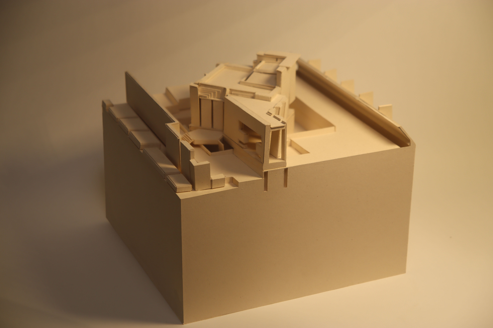
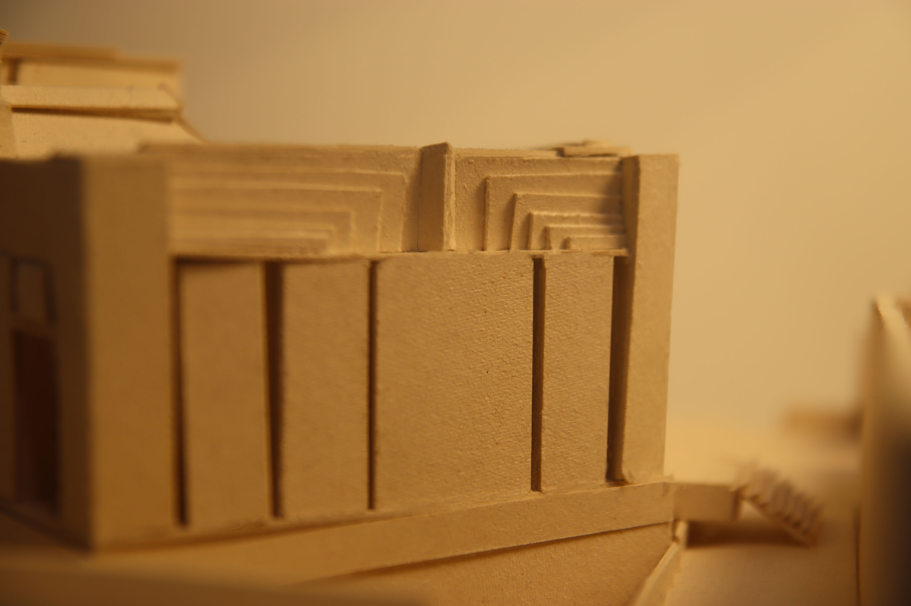
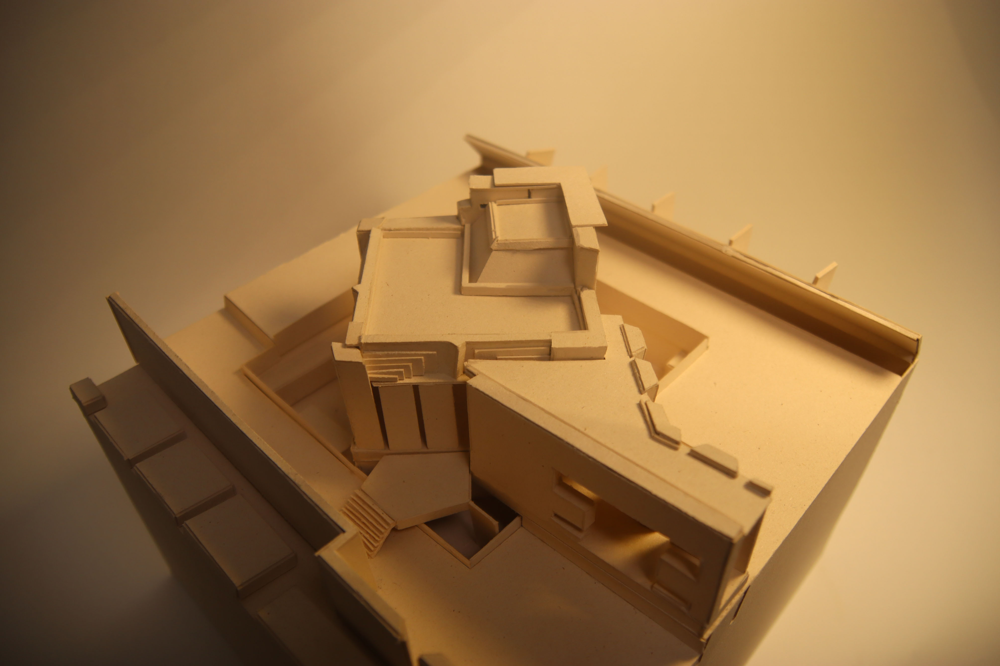
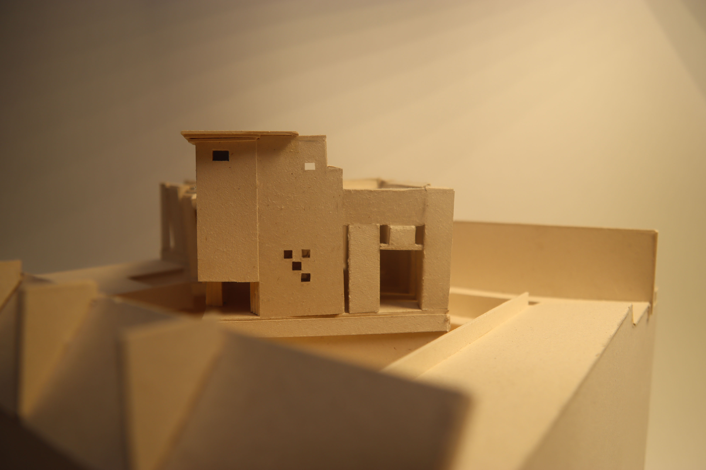
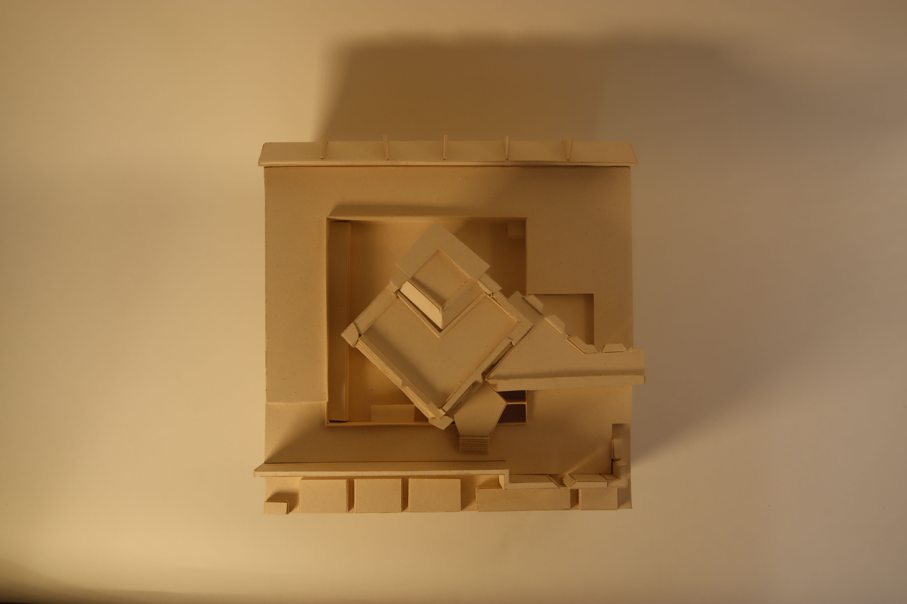
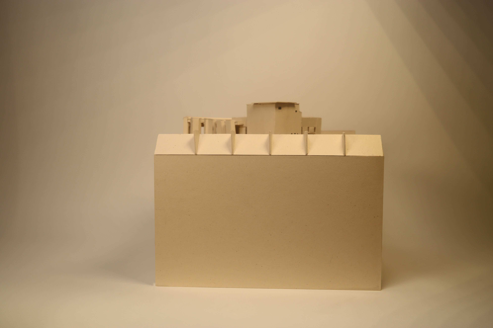
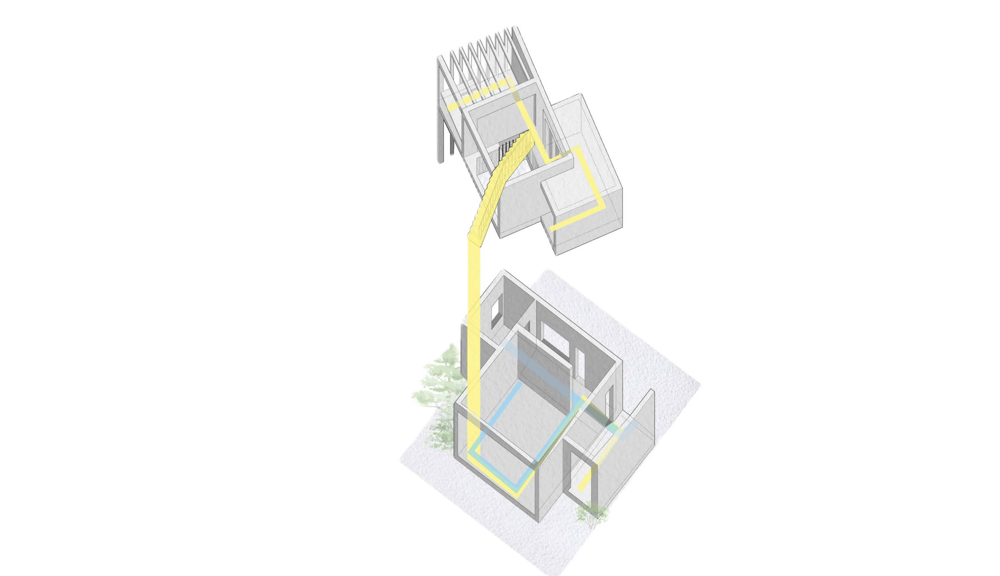

Carlo Scarpa's Brion Cemetery: A Precedent Study
A precedent study exploring how the interplay between mass and ground shapes architectural narrative, choreographs human interaction, and transforms the landscape into an active participant in the experience of space.
Academic Term: 2026 Fall
Instructors: Jeremy Ficca and Maryam Karimi
Project Description
Rendered in stark black and white, these drawings distill the Brion Cemetery into its essential forms, exploring the interplay of mass, void, and the spatial relationships that bind its volumes together.



Just as users interact differently with the first and second floor of the gallery, one can do the same with this handmade model. The first and second floors open on the same unifying axis, but are separateable.



